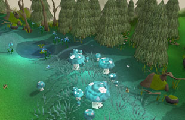
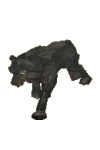

")
Isafdar (Members)
Warning | Introduction | Location | Points of Interest | Personalities | Quests
Isafdar's forest dwellers | Miscellaneous
Isafdar's forest dwellers | Miscellaneous
Warning
To gain access to Isafdar you must first complete the Underground Pass.
There are numerous traps and pitfalls around Isafdar. Some, though not all, are tipped with poison, making them a formidable obstacle for those without anti-poison. It is advisable to bring a few doses for this reason.
Introduction

This serenity has not been transferred to the elves, though they are old as the trees themselves. Civil war has hammered a wedge between the eight families of Tirannwn, shattering peaceful allegiances into disparate factions. Forced outside of Prifddinas by the dominant Iorwerth family, nomadic rebels camp among the trees of Isafdar, seeking an end to their rule.
Location

Isafdar is set aside from outsiders in a mountain bay to the west. Although ideal for a life of isolated development, the mountain, swamp and ocean boundaries have made it difficult for the elvish people to hold onto their ancestral lands beyond. In ages past, the elves had held rule over all the lands of Kandarin.
Isafdar itself is a politically fractured land. Those elves in control of Prifddinas have formed a camp in the north of the forest, while rogue elves and humans roam the southern half, settling semi-permanently in the south-eastern lodge of Lletya and the south-western human outpost.
To the east lies the mountain range of Arandar, traversible through underground passes that lead to West and East Ardougne, although those who have spent much time in Isafdar will no doubt discover the easier route over the north of the mountains (provided they have committed Regicide).
The sulphurous poison wastes form the southern border of Isafdar; a valuable source of sulphur and tar for those adventurers bold enough to bear the stench, though each year the wastes expand and devour more of the forest.
The west coast is made up of ocean, and a lot of it.
A brisk walk north will end with the impressive octagonal city of Prifddinas, once home to all eight of the families of Seren.
Points of Interest

A preserved forest like Isafdar would, naturally, be ripe for plundering: and so it proves to be. The elves, too distracted by warcraft to complain about armfuls of yew and magic logs, fail to raise an eyebrow at the clanging of pickaxe on adamantite. So fill your boots, adventurer, there are plenty of resources for those wishing to mine them.
Fishing spots line the river in the north of the forest, brimful with trout, salmon and pike. With thousands of trees as a backdrop, these will prove reasonably effortless to cook. Off the north-west coast are also bass and shark Fishing spots. Scattered about the forest are a few locations where hunters can find a couple of high-level creatures to trap.
The northern encampment boasts a loom for basket and cloth-weaving.
The forest comes with its fair share of rare trees; most invitingly the magic trees of the south-east. Yew trees can also be lumbered from a patch in the center of Isafdar, while adamantite and limestone, alongside the previously mentioned sulphur and coal-tar, make the southern swamp boundary an attractive prospect for miners and alchemists alike.
Personalities
![[image]](../../img/main/kbase/npc/area_guides/chathead/lord_iorwerth.gif) Military commander and highest-ranking member of the Iorwerth family, Lord Iorwerth has dispatched himself from Prifddinas to quell Tyras and his rogue band of West Ardougne fighters - by whatever means necessary. This may include employing adventurers with a hunger for quests and a willingness to embark on missions with no questions asked. Like all elves, he is devoted to Seren.
|
Lord Iorwerth could not sum up his charge better: "bless his loyalty, curse his suspicion". Skeptical of strangers to the point of nuisance, the Lord's most senior tracker will not talk or co-operate with anyone who has not gone through careful vetting from the Lord himself.
|
|
| Lord Iorwerth commands his warriors from the northern encampment slightly southwest of Prifddinas. | The Lord's tracker is rummaging for clues in Tyras's old camp in the center of Isafdar. |
![[image]](../../img/main/kbase/npc/area_guides/chathead/mystery_king_tyras.gif) Although Tyras is powerful and respected, he can be forgiven for rarely stepping out of his tent. Surrounded by flanks of guards and a catapult, Tyras hopes to stay alive long enough to return triumphantly to Ardougne, where his rival and brother King Lathas lives.
|
![[image]](../../img/main/kbase/npc/area_guides/chathead/general_hining.gif) Torn between the day-to-day organisation of his troops and the protection of Tyras from elf attack, General Hining has little time for chat. He is King Tyras's most trusted soldier, and Hining's word is as good as Tyras's in the camp.
|
|
| Tyras can be found, but not seen, in his camp in south-west Isafdar. | General Hining busies himself around the south-western camp. |
|
Possessing the least ability, awareness and intelligence of all of the guards, this rotund character has been chosen by Tyras to oversee the catapult: a strange role for one so remarkably incompetent. Devoted to Tyras and his own belly, this guard often finds one conflicting with the other.
|
![[image]](../../img/main/kbase/npc/area_guides/chathead/eluned.gif) Statuesque, friendly and many hundreds of years old, Eluned is an enchantress who makes an impression. Unfortunately, her wanderlust often overtakes her, and she teleports elsewhere. Devoted to Seren, Eluned, when found, will prove irreplaceable for those wishing to understand the complexities of the crystal.
|
|
| The catapult guard is having a bellyache to the north of the south-western camp. | Eluned skips from area to area in Isafdar. |
![[image]](../../img/main/kbase/npc/area_guides/chathead/islwyn.gif) Islywn hates gnomes, humans, trolls and dwarves. Which leaves few potential pen-friends for the slightly grumpy elf. Underneath the glacial exterior, however, lies a far warmer character than Islwyn would choose to reveal. Subject to a very complicated family issue, Islywn could use - but would never ask for - a little help in the matter.
|
![[image]](../../img/main/kbase/npc/area_guides/chathead/ilfeen.gif) Never one to stay in the same place for too long, Ilfeen prefers to roam Isafdar, being at one with the forest. Her devotion to the ways of Seren can only be matched by her understanding of the crystals, from which she possesses the invaluable means of how to replenish them.
|
|
| Wherever Eluned goes, Islywn will follow. Purely out of friendship and devotion to Seren, of course. | Ilfeen prefers to roam the northern parts of the forest. |
Quests
The following quests can be started in Isafdar:
Roving Elves (Members)
Catapult Construction (Members)
Isafdar's forest dwellers
![[image]](../../img/main/kbase/npc/area_guides/tyras_guard.gif) Through years of warcraft with blade and bow, these guards of Tyras have become masters of both, though they obviously favour close combat. Armed to the hilt, they spend their waking hours preparing for the inevitable battle, and remain tightlipped to curious adventurers.
|
![[image]](../../img/main/kbase/npc/area_guides/elf_warrior.gif) The warriors of Prifddinas are separated into the two disciplines of archery and piking, perfect for the narrow passes of the Isafdar forest. Masters of both, these highly-trained foot soldiers are armed with similarly impressive crystal bows and pikes, born of Seren's seeds.
|
|
| The guards do what they do best: guard Tyras's camp. | Lord Iorwerth's warriors prepare for the war in Lord Iorwerth's camp. |
|

Far larger than the common white version, the dire wolf has found itself at the top of the Isafdar food chain. Massive claws and the mini-scimitars of his sharpened incisors make the dire wolf born to rend and tear flesh. Pack hunters, these predators can be the undoing of the unprepared adventurer.
|
![[image]](../../img/main/kbase/npc/area_guides/grizzly_bear.gif) Solitary omnivores that will attack if provoked or hungry, the grizzly bear is a massive beast of fur and claws. They are family creatures, though, and will often be found in groups called mauls composed of one or two adults and a number of cubs.
|
|
| The dire wolves hunt deep within the forest, towards the south and in the north-east near the limestone mine. | The bears are found all over the forest of Isafdar. |
Miscellaneous
- Three barrels ring Tyras's tent, empty and ready to be 'borrowed'.
- There is a forge in Tyras's camp, ideal for smelting the adamantite gleaned from Isafdar.
- There are whiteberries (great for Defence and super Defence potions) in the south of the forest.

More articles in
Other
|
|